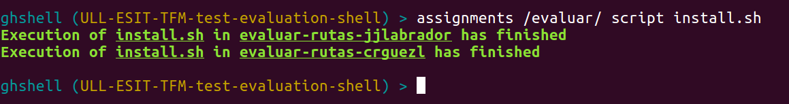

Siguiente: Recopilar la información obtenida Subir: Funcionalidades requeridas Anterior: Automatizar la descarga de Índice General Índice de Materias
En función del contexto donde nos encontremos dentro de la herramienta, podremos:
La ruta del fichero del script puede ser absoluta o relativa.
Estos scripts deben estar escritos en Bash.
La ejecución de cada script se ejecuta en un proceso hijo independiente pero, a diferencia del clonado, el script se ejecuta línea a línea de manera $sincrona$.
Se puede observar el estado de la ejecución del script y los resultados revisando el fichero de log que se genera: <nombre-repositorio>-<nombre-script>.log
|

|